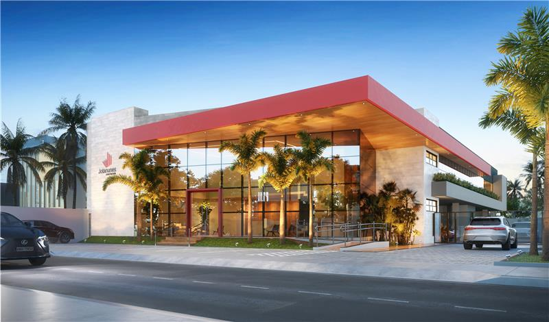

Bem-Vindo
Por favor, leia e aceite os termos para se conectar
O uso desta rede é monitorado pela JotaNunes.
Todos os acessos são registrados conforme a LGPD.
O tempo de conexão é limitado a 12 horas.
Ao se conectar, você concorda com os termos de uso da rede.
Eu li e aceito os termos acima.
Em caso de dúvidas, entre em contato com
suporte@jotanunes.com
Você já está autenticado.